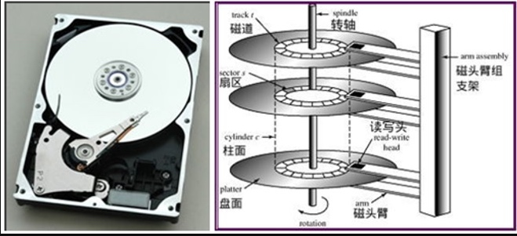

本文主要介绍了，磁盘的物理结构，文件描述符和 linux 的目录结构。
磁盘物理结构
磁盘物理结构及 IO 时的过程

- 磁盘面，磁盘由一叠磁盘面组成，每个盘面对应一个磁头
- 磁道(Track)，每个盘面会围绕圆心划分多个同心圆，两个圆圈之间是一个磁道
- 柱面(cylinders)，所有磁盘同一位置的磁道组成的圆柱体叫柱面
- 扇区(Sector)，每个磁道划分成多个扇区，如计算磁盘总大小：255 盘面 * 145847 柱面 * 63 扇区 * 每个扇区 512bytes =1199632412160 byte=1117.25GB，文件在硬盘最小存储单位叫“扇区（Sector 512Byte）”，多个扇区组成“块（block）”，通常由 8 个 Sector 组成一个 block，操作系统读取硬盘通常按块读取。文件数据都存储在“块”里，文件的元信息（创建者，创建日期，大小...）存储在 inode 里面，即“索引节点”。用户通过文件名打开文件，实际是，系统通过文件名找到 inode 号码，获取 inode 信息，从而找到文件数据所在的 block。目录文件如果只有读权限，只能获取文件名，其他信息都存储在 inode 里面，读取 inode 信息需要具有执行权限
x可以通过 stat 查看文件 inode 信息- 第一步，首先是磁头径向移动来寻找数据所在的磁道。这部分时间叫寻道时间（seeking time），通常在 5ms 以下。
- 第二步，找到目标磁道后通过盘面旋转，将目标扇区移动到磁头的正下方。这部分事件叫旋转延迟 (rotational latency time)。如果是 7200转/min 的硬盘，延迟时间平均是 60 * 1000/7200/2=4.17ms。
- 第三步，向目标扇区读取或者写入数据，拷贝到内存时间很快，可以忽略。到此为止，一次磁盘 IO 完成。
- 故：单次磁盘 IO 时间 = 寻道时间 + 旋转延迟 + 存取时间，一次磁盘 IO 的时间平均在 9ms 左右
- 假设磁盘由 400 个柱面，共分为 4 个分区，第四个分区在 301-400 柱面范围
- 多个磁盘，/dev/sba /dev/sdb 命名
- 同个磁盘，多个分区 dev/sda1 /dev/sda2 命名，
- 硬盘的第一个扇区记录
主要开机记录区MBR（安装开机记录程序）,446Bytes,分区表（记录硬盘分区状态），分区表有 64Bytes，每个分区表项长 16 Bytes，所以只能最多有四个分区，主分区（primary）和延伸分区Extended，分区的最小单位是柱面，主分区和延伸分区最多可以有四个(硬盘的限制)，延伸分区最多只能有一个（操作系统限制），逻辑分区是延伸分区持续切割出来的分区，主分区和逻辑分区能够格式化，延伸分区无法格式化，主分区和逻辑分区用来存储数据，分区的/sdb4这个是延伸分区，提供给逻辑分区创建之用，逻辑分区是从/dev/sdb5开始。硬盘格式化之后分为两个区域，一个是数据区，存放文件数据，一个是 inode 区（inode table）存放 inode 包含的信息。 
# 查看硬盘分区每个Inode大小
# Block size 查看Block的大小
[root@rp-master ~]# dumpe2fs -h /dev/sda1 | grep "Inode size"
dumpe2fs 1.41.12 (17-May-2010)
Inode size: 128
# 查看文件inode信息 inode里面没有文件名
#包括文件字节数、拥有者 ID、GroupId、读写执行权限、时间挫、链接数、block 位置
[root@vmcentos00 data]# stat unzip-file.sh
File: "unzip-file.sh"
Size: 1273 Blocks: 8 IO Block: 4096 普通文件
Device: 811h/2065d Inode: 14 Links: 1
Access: (0777/-rwxrwxrwx) Uid: ( 0/ root) Gid: ( 0/ root)
Access: 2016-08-08 09:02:52.967273201 +0800
Modify: 2016-08-05 15:38:02.286273201 +0800
Change: 2016-08-05 15:38:02.292273201 +0800
# 查看每个硬盘分区inode总数和已经使用的数量
# df -l 查看数据区
[root@vmcentos00 data]# df -i
Filesystem Inodes IUsed IFree IUse% Mounted on
/dev/sda3 3473408 215599 3257809 7% /
tmpfs 4109318 2 4109316 1% /dev/shm
/dev/sda1 51200 39 51161 1% /boot
/dev/sdb1 134217728 1854559 132363169 2% /data
# 查看文件inode号码
[root@vmcentos00 data]# ls -i unzip-file.sh
14 unzip-file.sh
# 查看目录文件详细信息
[root@vmcentos00 data]# ls -l /data
总用量 6976
drwxr-xr-x 19 root root 4096 7月 29 11:21 006
drwx------ 2 root root 16384 8月 2 08:58 lost+found
-rw-r--r-- 1 root root 4868927 8月 8 10:16 sincedb_request
-rw-r--r-- 1 root root 2241556 8月 8 10:16 sincedb_syscode
-rwxrwxrwx 1 root root 1273 8月 5 15:38 unzip-file.sh
drwxr-xr-x 12 root root 4096 8月 8 10:16 xmls
[root@vmcentos00 ~]# fdisk -l
# 可以看出每个扇区大小是512byte
Units = cylinders of 16065 * 512 = 8225280 bytes
fd 文件描述符
linux 系统中一切可以看成文件，普通文件、目录文件、链接文件和设备文件。文件描述符（file descriptor）是内核为了高效管理已经打开的文件创建的索引。程序刚启动，0 是标准输入，1 是标准输出，2 是标准错误，如果此时新打开一个文件，文件描述符是 3。 文件描述符是一个非负整数，它是一个索引值，指向内核为每一个进程锁维护该进程打开文件的记录表。
On a UNIX system, everying is a file; if something is not a file, it is a process.

文件描述符是一个非负整数。 进程 A 中，文件描述符 1 和 30 都打开了同一个文件，比如对同一个文件使用 dup 函数。 进程 A 的文件描述符 2 和进程 B 的文件描述符 2 都指向了同一个打开的文件句柄，这种情形可能是在调用 fork() （A、B 是父子进程）之后出现的。 进程 A 的文件描述符 0 和进程 B 的文件描述符 3 指向不同的文件句柄，但是缺指向同一个文件。可能是每个进程对同一个文件发起 open 调用
不同的文件类型(ls -lh 输出的最左边就是文件类型)
| Symbol | Meaning | 解释 |
|---|---|---|
| - | Regular file | 普通文件，如文本文件，可执行文件或程序 |
| d | Directory | 目录文件 |
| l | Link | 链接文件 |
| c | Special file | |
| s | Socket | |
| p | Named pipe | |
| b | Block device |
链接文件
- 硬链接 多个文件名指向同一个 inode 号码，删除一个文件名，不影响另一个文件名使用。
ln 源文件 目标文件 - 软连接 文件 A 的内容是文件 B 的路径，文件 A 称为文件 B 的软连接，A，B inode 号码不同（A 是一个单独的文件），删除 B，A 将提示没有文件或目录
ln -s 源文件或目录 目标文件或目录
➜ /Users/huangrupeng >ll /usr/local/bin/hexo
lrwxr-xr-x 1 huangrupeng admin 37B 6 2 09:05 /usr/local/bin/hexo -> ../lib/node_modules/hexo-cli/bin/hexo
lsof 命令
lsof(list of open files)，列出当前系统打开文件的工具，进程打开的文件描述符列表提供了大量关于这个应用程序的信息，可以通过 lsof 来进行系统监测。
| COMMAND | PID | USER | FD | TYPE | DEVICE | SIZE/OFF | NODE | NAME |
|---|---|---|---|---|---|---|---|---|
| 进程名称 | 进程标识符 | 进程所有者 | 文件描述符 | 文件类型 | 磁盘名称 | 文件大小 | 索引节点 | 文件确切名称 |
# 查看进程占用端口情况
lsof -i -n
# 列出当前系统打开的所有文件
# 文件可以是普通文件、目录、网络文件系统的文件、网络文件(如 socket)、符号链接等
# 查看进程号 21896 占用的端口 -P
# -a 多个指令用且的关系(默认是或)
# -P 不要将网络文件的端口号转化为名字
# -n 不要将网络文件的网络号转化为名字
# -i 列出所有的网络连接
# -t 只列出进程号
lsof -Pan -p 21896 -i
# 列出所有监听端口
lsof -Pnl +M -i4
# 列出使用80端口的进程
lsof -i TCP:80
lsof -i :80
# 列出所有使用指定文件、目录的进程
lsof </path/to/file>
# 列出指定用户的所有进程
lsof -u <username>
# List all files/network connections a given process is using
lsof -c <command-name>
# 指定端口号是否处于监听状态
lsof -Pi :80 -sTCP:LISTEN -t
# 查看系统级别最大打开文件数 /proc/sys/fs/file-max
[root@vmcentos00 data]# sysctl -a|grep fs.file-max
fs.file-max = 3265080
# 查看单个进程最大打开文件数
[root@vmcentos00 data]# ulimit -n
1024
# 修改最大文件打开数
[root@vmcentos00 data]# vim /etc/security/limits.conf
# 添加下面两行
* soft nofile 65535
* hard nofile 65535
# 系统登录后，应该调用pam_limits.so模块来设置系统对该用户可使用的各种资源数量的最大限制
# 64位的系统是/lib64否则是/lib
[root@vmcentos00 ~]# echo session required /lib64/security/pam_limits.so >> /etc/pam.d/login
# 重启系统
文件系统
/ 根目录
├── bin 必须命令的二进制文件
├── boot 存放内核引导配置文件
├── dev 存放设备文件
├── etc 存放系统配置文件
├── home 用户主目录
├── lib 动态共享库
├── lost+found 文件系统恢复时的恢复文件
├── media 可卸载存储介质挂载点
├── mnt 文件系统临时挂载点
├── opt 外部应用程序软件包
├── proc 系统内存的映射目录，提供内核与进程信息 包含系统资源的虚拟文件系统
├── root root 用户主目录
├── sbin 存放系统二进制文件
├── srv 存放服务相关数据
├── sys sys 虚拟文件系统挂载点
├── tmp 存放临时文件
├── usr 存放用户应用程序
├── var 存放邮件、系统日志等变化文件
| └─ lib 保存应用程序或系统的状态信息
└─────
proc
proc 虚拟文件系统。
/proc 目录下面常见文件
/proc/cpuinfo处理器相关信息文件/proc/version系统运行内核版本号/proc/...其他我用的都比较少，以后有应用场景了再补充
进程目录下的常见文件
proc 目录中由数字命名的子目录，这些表示当前正在运行的进程号，里面包含进程相关的文件，主要有：
cmdline启动当前进程的完整命令cwd指向当前进程运行目录的符号链接environ当前进程的环境变量列表exe指向当前进程可执行文件的符号链接fd当前进程打开的每一个文件的文件描述符limits当前进程使用的资源限制status与 stat 提供的信息类似，当前进程的详细信息statm当前进程占用内存状态信息task目录文件，当前进程运行的每一个线程的相关信息，每个线程的相关信息保存在一个由线程号命名的目录中
下面是我的一个运行在 7003 端口 go 程序
# 根据端口找到进程号
[root@localhost 17480]# lsof -i:7003 -anP
COMMAND PID USER FD TYPE DEVICE SIZE/OFF NODE NAME
main 17480 root 6u IPv6 669347315 0t0 TCP *:7003 (LISTEN)
[root@localhost 17480]# pwd
/proc/17480
# 查看当前进程的 lsof 信息
[root@localhost 17480]# lsof -p 17480 -anP
COMMAND PID USER FD TYPE DEVICE SIZE/OFF NODE NAME
main 17480 root cwd DIR 8,3 4096 29887827 /srv/edc/bin
main 17480 root rtd DIR 8,3 4096 2 /
main 17480 root txt REG 8,3 15913280 29887813 /srv/edc/bin/main
main 17480 root 0w CHR 1,3 0t0 1028 /dev/null
main 17480 root 1w REG 8,3 3321639 29887819 /srv/edc/bin/nohup.out
main 17480 root 2w REG 8,3 3321639 29887819 /srv/edc/bin/nohup.out
main 17480 root 3u IPv4 677357886 0t0 TCP 10.24.10.82:51608->10.24.10.82:3306 (ESTABLISHED)
main 17480 root 4u a_inode 0,10 0 8318 [eventpoll]
main 17480 root 6u IPv6 669347315 0t0 TCP *:7003 (LISTEN)
main 17480 root 9u IPv4 678946119 0t0 TCP 127.0.0.1:39330->127.0.0.1:6379 (ESTABLISHED)
main 17480 root 10u IPv4 677362834 0t0 TCP 10.24.10.82:51646->10.24.10.82:3306 (ESTABLISHED)
[root@localhost 17480]# ls
attr cgroup comm cwd fd io map_files mountinfo net oom_adj pagemap projid_map schedstat smaps statm task wchan
autogroup clear_refs coredump_filter environ fdinfo limits maps mounts ns oom_score patch_state root sessionid stack status timers
auxv cmdline cpuset exe gid_map loginuid mem mountstats numa_maps oom_score_adj personality sched setgroups stat syscall uid_map
[root@localhost 17480]#
/dev/shm
该目录不在硬盘上，而是在内存里，默认大小；是内存的一半
[root@localhost ~]# df -lh|grep /dev/shm
tmpfs 16G 0 16G 0% /dev/shm
参考
General overview of the Linux file system